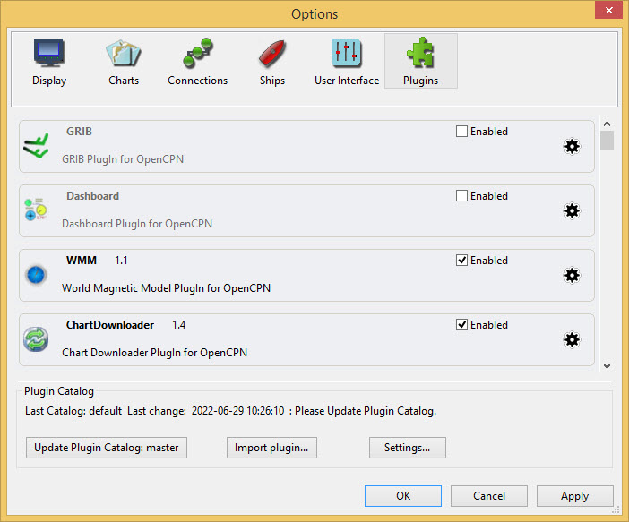

Plugins
Plugins add extra functionality to the OpenCPN program.
Four plugins are provided as part of the standard OpenCPN installation:
-
Grib
-
Dashboard
-
WMM
-
Chart Downloader
Options Plugins

The Chart Downloader plugin has already been used HERE.
The OpenCPN Plugins Manual describes each of the plugins:
Installing a plugin
This is included here because it is important to use the latest plugin version.
Options Plugins
Update Plugin Catalog: master
This results in a download containing links to install the latest plugins.
The method of installing plugins generally is HERE